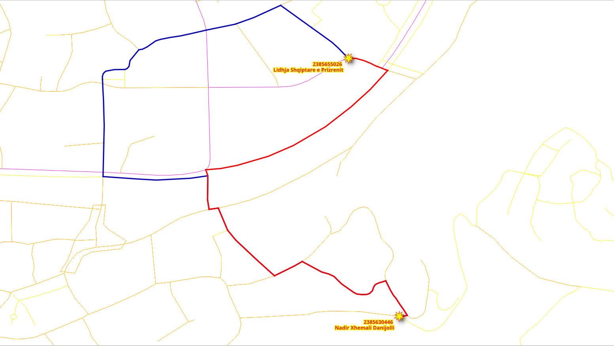

4. Diagramvyer¶

Olika applikationer kräver olika grafer. I det här kapitlet beskrivs hur man tar bort segment som inte är sammankopplade och olika sätt att skapa grafer.
4.1. Kraven för grafen¶
I det här kapitlet finns det tre grafkrav. Det består av tre grafer baserade på en fullständigt sammanhängande graf som härrör från vägar: två för olika typer av fordon och en för fotgängare, källan och målet i dem alla är baserade på källans_osm och målets_osm.
Beskrivning av graferna:
Särskilt fordon:
Cirkulera i hela Belém-området.
Använd inte steps, footway, path, cycleway.
Speed är standardhastigheten från OSM-informationen.
Taxifordon:
Cirkulera på en mindre yta:
Avgränsningsruta:
(-48.52,-1.46,-48.45,-1.41)Använd inte steps, footway, path, cycleway.
Hastigheten är 10% långsammare än för de aktuella fordonen.
Fotgängare:
Promenad i hela Belém-området.
Kan inte gå på exklusiva fordonsvägar
”motorways” och på ”primary” segment.
Hastigheten är
2 mts/sek.
4.2. pgr_extractVertices¶
pgr_extractVertices beräknar de anslutna komponenterna i en odelad graf med hjälp av en djup första sökning. En ansluten komponent i en odelad graf är en uppsättning hörn som alla är nåbara från varandra.
Sammanfattning av signatur
pgr_extractVertices(Edges SQL, [dryrun])
RETURNS SETOF (id, in_edges, out_edges, x, y, geom)
OR EMTPY SET
Beskrivning av funktionen finns i pgr_extractVertices
4.2.1. Övning 1: Skapa en vertices-tabell¶
Problem
Skapa en tabell med toppar som motsvarar kanterna i ways.
Lösning
En graf består av en uppsättning hörn och en uppsättning kanter.
I detta fall är tabellen
waysen uppsättning kanter.För att kunna använda alla graffunktioner i pgRouting krävs det att uppsättningen av hörnpunkter är definierad.
Enligt kraven kommer grafen att baseras på OSM-identifierare.
SELECT * INTO ways_vertices
FROM pgr_extractVertices(
'SELECT gid AS id, source_osm AS source, target_osm AS target
FROM ways ORDER BY id');
SELECT 24229
Granskning av beskrivningen av vertices-tabellen
\dS+ ways_vertices
Table "public.ways_vertices"
Column | Type | Collation | Nullable | Default | Storage | Compression | Stats target | Description
-----------+------------------+-----------+----------+---------+----------+-------------+--------------+-------------
id | bigint | | | | plain | | |
in_edges | bigint[] | | | | extended | | |
out_edges | bigint[] | | | | extended | | |
x | double precision | | | | plain | | |
y | double precision | | | | plain | | |
geom | geometry | | | | main | | |
Access method: heap
Inspektera informationen i tabellen vertices
SELECT * FROM ways_vertices Limit 10;
id | in_edges | out_edges | x | y | geom
------------+---------------+--------------+---+---+------
491423851 | {1024,1025} | {1026,1032} | | |
7495793356 | {21326} | {1084,21328} | | |
492118490 | {2743} | {600,20210} | | |
3684839574 | {12850,12851} | {2} | | |
2614178881 | {10612} | {563,10620} | | |
4057861890 | {14887,14888} | {264,16279} | | |
606964623 | {7987} | {422,7988} | | |
491465232 | {1328,1329} | {470,13502} | | |
491423965 | {1065} | {966,21336} | | |
6950940968 | {20481} | {769,18904} | | |
(10 rows)
4.2.2. Övning 2: Fyll i andra kolumner i vertikaltabellen¶
Problem
Fyll i geometriinformation i tabellen Vertices.
Lösning
Räkna antalet rader som måste fyllas på.
SELECT count(*) FROM ways_vertices WHERE geom IS NULL;
count
-------
24229
(1 row)
Uppdatera kolumnerna
geombaserat på kolumnenource_osmfrån tabellenways.Använd geometrins startpunkt.
UPDATE ways_vertices SET geom = ST_startPoint(the_geom) FROM ways WHERE source_osm = id;
UPDATE 21275
Förväntas inte bli gjort på grund av att vissa hörn bara är återvändsgränder.
SELECT count(*) FROM ways_vertices WHERE geom IS NULL;
count
-------
2954
(1 row)
Uppdatera kolumnerna
geombaserat på kolumnentarget_osmfrån tabellenways.Använd geometrins slutpunkt.
UPDATE ways_vertices SET geom = ST_endPoint(the_geom) FROM ways WHERE geom IS NULL AND target_osm = id;
UPDATE 2954
Förväntar sig att det ska göras, det vill säga att geometrikolumnen inte ska ha ett NULL-värde.
SELECT count(*) FROM ways_vertices WHERE geom IS NULL;
count
-------
0
(1 row)
Uppdatera kolumnerna x och y baserat på kolumnen geom.
UPDATE ways_vertices set (x,y) = (ST_X(geom), ST_Y(geom));
UPDATE 24229
4.3. pgr_connectedComponents¶
pgr_connectedComponents beräknar de anslutna komponenterna i en odelad graf med hjälp av Depth First Search. En ansluten komponent i en odelad graf är en uppsättning hörn som alla är nåbara från varandra.
Sammanfattning av signatur
pgr_connectedComponents(edges_sql)
RETURNS SET OF (seq, component, node)
OR EMPTY SET
Beskrivning av funktionen finns i pgr_connectedComponents
4.3.1. Övning 3: Setkomponenter på kanter och hörntabeller¶
Problem
Hämta information om grafens komponenter.
Lösning
Skapa ytterligare kolumner i tabellerna för kanter och hörn.
ALTER TABLE ways ADD COLUMN component BIGINT;
ALTER TABLE ways_vertices ADD COLUMN component BIGINT;
ALTER TABLE
ALTER TABLE
Använd
pgr_connectedComponentsför att fylla i tabellen med hörnpunkter.Använd resultatet för att lagra komponentnumren i vertikaltabellen. (rad 1)
Använd OSM-identifierarna för topparna. (rader 4-5)
UPDATE ways_vertices SET component = c.component
FROM (SELECT * FROM pgr_connectedComponents(
'SELECT gid as id,
source_osm AS source,
target_osm AS target,
cost, reverse_cost FROM ways'
)) AS c
WHERE id = node;
UPDATE 24229
Uppdatera tabellen med kanter baserat på toppunktens komponentnummer
UPDATE ways SET component = v.component
FROM (SELECT id, component FROM ways_vertices) AS v
WHERE source_osm = v.id;
UPDATE 32586
4.3.2. Övning 4: Inspektera komponenterna¶
Problem
Svara på följande frågor:
Hur många komponenter finns det i vertices-tabellen?
Hur många komponenter finns det i kantbordet?
Lista de 10 komponenter som har flest kanter.
Hämta komponenten med det maximala antalet kanter.
Lösning
Hur många komponenter finns det i vertices-tabellen?
Räkna de olika komponenterna.
SELECT count(DISTINCT component) FROM ways_vertices;
count
-------
108
(1 row)
Hur många komponenter finns det i kantbordet?
Räkna de olika komponenterna.
SELECT count(DISTINCT component) FROM ways;
count
-------
108
(1 row)
Lista de 10 komponenter som har flest kanter.
Räkna antal rader grupperade efter komponent. (rad 1)
Omvänd ordning för att visa topp 10. (rad 2)
SELECT component, count(*) FROM ways GROUP BY component
ORDER BY count DESC LIMIT 10;
component | count
-------------+-------
247780039 | 32164
5857529375 | 117
11351599106 | 22
4321917778 | 19
11177916097 | 17
6117200807 | 15
3976699256 | 14
11776230037 | 13
11177916268 | 10
11352002684 | 10
(10 rows)
Hämta komponenten med det maximala antalet kanter.
Använd frågan från förra frågan för att få det maximala antalet
Hämta den komponent som matchar det högsta värdet.
WITH
all_components AS (SELECT component, count(*) FROM ways GROUP BY component),
max_component AS (SELECT max(count) from all_components)
SELECT component FROM all_components WHERE count = (SELECT max FROM max_component);
component
-----------
247780039
(1 row)
4.4. Förberedelse av graferna¶
4.4.1. Övning 5: Skapa en vy för routing¶

Problem
Skapa en vy med minimal mängd information för att bearbeta de specifika fordonen.
Använd OSM-identifierarna på topparna.
Routing cost och reverse_cost i sekunder för beräkningar av routing.
Utesluta segmenten steps, footway, path, cycleway.
Data som behövs i vyn för vidare bearbetning.
name Namnet på segmentet.
length_m Längden i meter byter namn till
length.the_geom Geometrin byter namn till
geom.
Kontrollera att antalet kanter har minskats.
Lösning
Skapa en vy:
Om du behöver rekonstruera vyn, släpp den först med hjälp av kommandot på rad 1.
Hämta komponenten med maximalt antal kanter (raderna 6-10)
Kraven på source och target för funktionen ska vara med OSM-identifierare. (rad 14)
Kostnaden och den omvända kostnaden anges i sekunder. (rad 15)
De ytterligare parametrarna
length_mochthe_geomhar bytt namn,nameingår också. (rad 16)JOINmed konfigurationen:Exkludera steps, footway, path, cycleway. (rad 18)
-- DROP VIEW vehicle_net CASCADE;
CREATE VIEW vehicle_net AS
WITH
all_components AS (SELECT component, count(*) FROM ways GROUP BY component), -- line 6
max_component AS (SELECT max(count) from all_components),
the_component AS (
SELECT component FROM all_components
WHERE count = (SELECT max FROM max_component))
SELECT
gid AS id,
source_osm AS source, target_osm AS target, -- line 14
cost_s AS cost, reverse_cost_s AS reverse_cost,
name, length_m AS length, the_geom AS geom
FROM ways JOIN the_component USING (component) JOIN configuration USING (tag_id)
WHERE tag_value NOT IN ('steps','footway','path','cycleway'); -- line 18
CREATE VIEW
Verifiering:
Räkna raderna på de ursprungliga ways och på vehicle_net.
SELECT count(*) FROM ways;
SELECT count(*) FROM vehicle_net;
count
-------
32586
(1 row)
count
-------
27632
(1 row)
Hämta beskrivningen av vyn
\dS+ vehicle_net
View "public.vehicle_net"
Column | Type | Collation | Nullable | Default | Storage | Description
--------------+---------------------------+-----------+----------+---------+----------+-------------
id | bigint | | | | plain |
source | bigint | | | | plain |
target | bigint | | | | plain |
cost | double precision | | | | plain |
reverse_cost | double precision | | | | plain |
name | text | | | | extended |
length | double precision | | | | plain |
geom | geometry(LineString,4326) | | | | main |
View definition:
WITH all_components AS (
SELECT ways_1.component,
count(*) AS count
FROM ways ways_1
GROUP BY ways_1.component
), max_component AS (
SELECT max(all_components.count) AS max
FROM all_components
), the_component AS (
SELECT all_components.component
FROM all_components
WHERE all_components.count = (( SELECT max_component.max
FROM max_component))
)
SELECT ways.gid AS id,
ways.source_osm AS source,
ways.target_osm AS target,
ways.cost_s AS cost,
ways.reverse_cost_s AS reverse_cost,
ways.name,
ways.length_m AS length,
ways.the_geom AS geom
FROM ways
JOIN the_component USING (component)
JOIN configuration USING (tag_id)
WHERE configuration.tag_value <> ALL (ARRAY['steps'::text, 'footway'::text, 'path'::text, 'cycleway'::text]);
4.4.2. Övning 6: Begränsa vägnätet inom ett område¶

Problem
Skapa en vy
taxi_netför taxi:Taxin kan bara cirkulera inom denna avgränsningsruta:
(-48.52,-1.46,-48.45,-1.41)Taxihastigheten är 10% slägre än för det aktuella fordonet.
Verifiera det minskade antalet vägsegment.
Lösning
Skapa en vy:
Justera taxins
costochreverse_costså att de är 10% långsammare än för det aktuella fordonet. (rad 7)Grafen för taxin är en delmängd av grafen för
vehicle_net. (rad 9)Kan bara cirkulera inom den avgränsande rutan:
(-48.52,-1.46,-48.45,-1.41). (rad 10)
-- DROP VIEW taxi_net;
CREATE VIEW taxi_net AS
SELECT
id,
source, target,
cost * 1.10 AS cost, reverse_cost * 1.10 AS reverse_cost,
name, length, geom
FROM vehicle_net
WHERE vehicle_net.geom && ST_MakeEnvelope(-48.52,-1.46,-48.45,-1.41);
CREATE VIEW
Räkna raderna på taxi_net.
SELECT count(*) FROM taxi_net;
count
-------
9180
(1 row)
Hämta beskrivningen.
\dS+ taxi_net
View "public.taxi_net"
Column | Type | Collation | Nullable | Default | Storage | Description
--------------+---------------------------+-----------+----------+---------+----------+-------------
id | bigint | | | | plain |
source | bigint | | | | plain |
target | bigint | | | | plain |
cost | double precision | | | | plain |
reverse_cost | double precision | | | | plain |
name | text | | | | extended |
length | double precision | | | | plain |
geom | geometry(LineString,4326) | | | | main |
View definition:
SELECT id,
source,
target,
cost * 1.10::double precision AS cost,
reverse_cost * 1.10::double precision AS reverse_cost,
name,
length,
geom
FROM vehicle_net
WHERE geom && st_makeenvelope('-48.52'::numeric::double precision, '-1.46'::numeric::double precision, '-48.45'::numeric::double precision, '-1.41'::numeric::double precision);
4.4.3. Övning 7: Skapa en materialiserad vy för att dirigera fotgängare¶

Problem
Skapa en materialiserad vy med minimal mängd information för bearbetning av fotgängare.
Routing cost och reverse_cost kommer att vara på sekunder för routingsberäkningar.
Hastigheten är
2 mts/sek.
Exkludera segmenten motorway, primary och secondary.
Data som behövs i vyn för vidare bearbetning.
length_m Längden i meter.
the_geom Geometrin.
Kontrollera att antalet kanter har minskats.
Lösning
Skapa en vy:
Liknar Övning 5: Skapa en vy för routing:
Kostnaden och den omvända kostnaden anges i sekunder med en hastighet av 2 mts/sek. (rad 7)
Uteslut ”motorway”, ”primary” och ”secondary” (rad 11)
-- DROP MATERIALIZED VIEW walk_net CASCADE;
CREATE MATERIALIZED VIEW walk_net AS
WITH
allc AS (SELECT component, count(*) FROM ways GROUP BY component),
maxcount AS (SELECT max(count) from allc),
the_component AS (SELECT component FROM allc WHERE count = (SELECT max FROM maxcount))
SELECT
gid AS id,
source_osm AS source, target_osm AS target,
cost_s AS cost, reverse_cost_s AS reverse_cost,
name, length_m AS length, the_geom AS geom
FROM ways JOIN the_component USING (component) JOIN configuration USING (tag_id)
WHERE tag_value NOT IN ('motorway','primary','secondary');
SELECT 28450
Räkna raderna på vyn walk_net.
SELECT count(*) FROM walk_net;
count
-------
28450
(1 row)
Hämta beskrivningen.
\dS+ walk_net
Materialized view "public.walk_net"
Column | Type | Collation | Nullable | Default | Storage | Compression | Stats target | Description
--------------+---------------------------+-----------+----------+---------+----------+-------------+--------------+-------------
id | bigint | | | | plain | | |
source | bigint | | | | plain | | |
target | bigint | | | | plain | | |
cost | double precision | | | | plain | | |
reverse_cost | double precision | | | | plain | | |
name | text | | | | extended | | |
length | double precision | | | | plain | | |
geom | geometry(LineString,4326) | | | | main | | |
View definition:
WITH allc AS (
SELECT ways_1.component,
count(*) AS count
FROM ways ways_1
GROUP BY ways_1.component
), maxcount AS (
SELECT max(allc.count) AS max
FROM allc
), the_component AS (
SELECT allc.component
FROM allc
WHERE allc.count = (( SELECT maxcount.max
FROM maxcount))
)
SELECT ways.gid AS id,
ways.source_osm AS source,
ways.target_osm AS target,
ways.cost_s AS cost,
ways.reverse_cost_s AS reverse_cost,
ways.name,
ways.length_m AS length,
ways.the_geom AS geom
FROM ways
JOIN the_component USING (component)
JOIN configuration USING (tag_id)
WHERE configuration.tag_value <> ALL (ARRAY['motorway'::text, 'primary'::text, 'secondary'::text]);
Access method: heap
4.4.4. Övning 8: Testa vyerna för routing¶
{kind=link}
Problem
Testa de skapade vyerna
I synnerhet:
Från ”Estação das Docas” till ”Hangar Convention Center” med hjälp av OSM-identifieraren
de åsikter som ska testas är:
vehicle_nettaxi_netwalk_net
Visa endast följande resultat, eftersom de andra kolumnerna ska ignoreras i funktionen.
seqedgemed namnetidcostmed namnet:seconds
Lösning
I allmänhet
Avgången är Estação das Docas med OSM-identifierare
5661895682.Destinationen är Hangar Convention Center med OSM-identifieraren
10982869752.
För vehicle_net:
vehicle_netanvänds.Val av kolumner med motsvarande namn finns på rad 1.
Vyn är förberedd med de kolumnnamn som pgRouting använder.
Det finns inget behov av att byta namn på kolumner. (rad 3)
OSM-identifierarna för avgång och destination används. (rad 4)
1SELECT start_vid, end_vid, agg_cost AS seconds
2FROM pgr_dijkstraCost(
3 'SELECT * FROM vehicle_net',
4 5661895682, 10982869752);
start_vid | end_vid | seconds
------------+-------------+-------------------
5661895682 | 10982869752 | 465.6834621403192
(1 row)
För taxi_net:
Liknande som den föregående men med
taxi_net. (rad 3)Resultatet ger samma rutt som med
vehicle_netmencostär högre.
SELECT start_vid, end_vid, agg_cost AS seconds
FROM pgr_dijkstraCost(
'SELECT * FROM taxi_net',
5661895682, 10982869752);
start_vid | end_vid | seconds
------------+-------------+-------------------
5661895682 | 10982869752 | 512.2518083543514
(1 row)
För walk_net:
Liknande som den föregående men med
walk_net. (rad 3)Resultaten ger en annan rutt än fordonens.
SELECT start_vid, end_vid, agg_cost AS seconds FROM pgr_dijkstraCost( 'SELECT * FROM walk_net', 5661895682, 10982869752);
start_vid | end_vid | seconds
-----------+---------+---------
(0 rows)